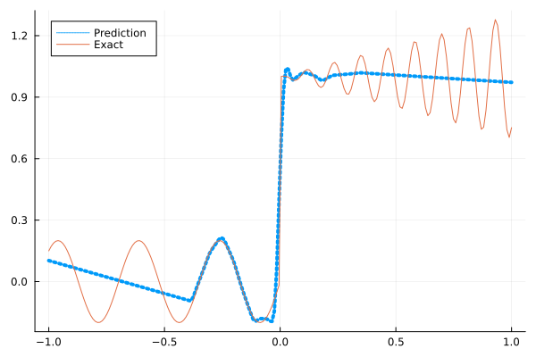
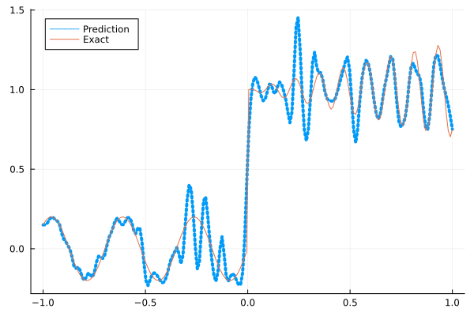
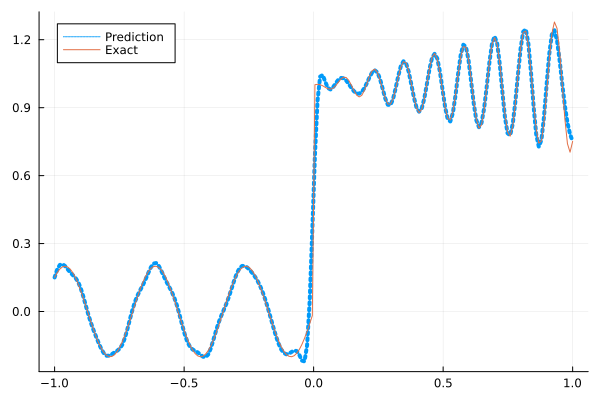
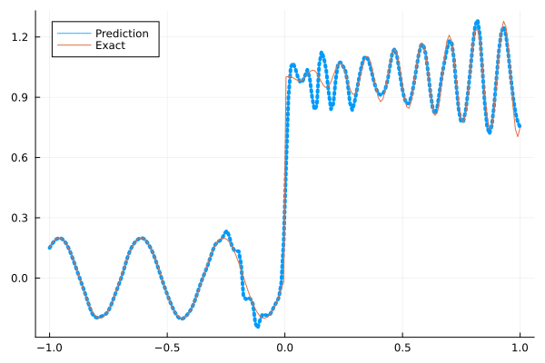
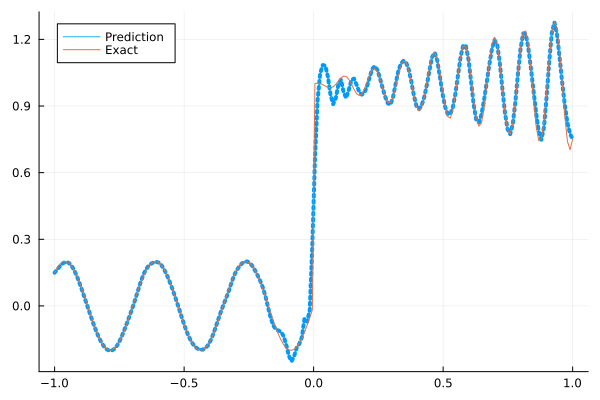

Fitting a nonlinear discontinuous function
This example is taken from here. However, we do not use adaptive activation functions. Instead, we show that using suitable non-parametric activation functions immediately performs better.
Consider the following discontinuous function with discontinuity at $x=0$:
\[u(x)= \begin{cases}0.2 \sin (18 x) & \text { if } x \leq 0 \\ 1+0.3 x \cos (54 x) & \text { otherwise }\end{cases}\]
The domain is $[-1,1]$. The number of training points used is 50.
Import pacakges
using Lux, Sophon
using NNlib, Optimisers, Plots, Random, StatsBase, ZygoteDataset
function u(x)
if x <= 0
return 0.2 * sin(18 * x)
else
return 1 + 0.3 * x * cos(54 * x)
end
end
function generate_data(n=50)
x = reshape(collect(range(-1.0f0, 1.0f0, n)), (1, n))
y = u.(x)
return (x, y)
endgenerate_data (generic function with 2 methods)Let's visualize the data.
x_train, y_train = generate_data(50)
x_test, y_test = generate_data(200)
Plots.plot(vec(x_test), vec(y_test),label=false)
Naive Neural Nets
First we demonstrate show naive fully connected neural nets could be really bad at fitting this function.
model = FullyConnected((1,50,50,50,50,1), relu)Chain(
layer_1 = Dense(1 => 50, relu), # 100 parameters
layer_2 = Dense(50 => 50, relu), # 2_550 parameters
layer_3 = Dense(50 => 50, relu), # 2_550 parameters
layer_4 = Dense(50 => 50, relu), # 2_550 parameters
layer_5 = Dense(50 => 1), # 51 parameters
) # Total: 7_801 parameters,
# plus 0 states, summarysize 80 bytes.Train the model
function train(model, x, y)
ps, st = Lux.setup(Random.default_rng(), model)
opt = Adam()
st_opt = Optimisers.setup(opt,ps)
function loss(model, ps, st, x, y)
y_pred, _ = model(x, ps, st)
mes = mean(abs2, y_pred .- y)
return mes
end
for i in 1:2000
gs = gradient(p->loss(model,p,st,x,y), ps)[1]
st_opt, ps = Optimisers.update(st_opt, ps, gs)
if i % 100 == 1 || i == 2000
println("Epoch $i || ", loss(model,ps,st,x,y))
end
end
return ps, st
endtrain (generic function with 1 method)Plot the result
@time ps, st = train(model, x_train, y_train)
y_pred = model(x_test,ps,st)[1]
Plots.plot(vec(x_test), vec(y_pred),label="Prediction",line = (:dot, 4))
Plots.plot!(vec(x_test), vec(y_test),label="Exact",legend=:topleft)Epoch 1 || 0.43565456188278856
Epoch 101 || 0.01767692156971372
Epoch 201 || 0.015860378042649104
Epoch 301 || 0.015614720251220173
Epoch 401 || 0.015299096112643932
Epoch 501 || 0.014768313559973689
Epoch 601 || 0.01407444854625288
Epoch 701 || 0.013556386572536465
Epoch 801 || 0.01331245719545946
Epoch 901 || 0.013243559975813519
Epoch 1001 || 0.013320302183128893
Epoch 1101 || 0.013212089073859144
Epoch 1201 || 0.01322626867958098
Epoch 1301 || 0.01323956157656701
Epoch 1401 || 0.01321017036314472
Epoch 1501 || 0.013249590156102602
Epoch 1601 || 0.013252919141335261
Epoch 1701 || 0.013209404468834491
Epoch 1801 || 0.013213199006689073
Epoch 1901 || 0.013362306094490078
Epoch 2000 || 0.013219677026438576
12.577026 seconds (15.13 M allocations: 1.444 GiB, 3.12% gc time, 94.01% compilation time)
Siren
We use four hidden layers with 50 neurons in each.
model = Siren(1,50,50,50,50,1; omega = 30f0)Chain(
layer_1 = Dense(1 => 50, sin), # 100 parameters
layer_2 = Dense(50 => 50, sin), # 2_550 parameters
layer_3 = Dense(50 => 50, sin), # 2_550 parameters
layer_4 = Dense(50 => 50, sin), # 2_550 parameters
layer_5 = Dense(50 => 1), # 51 parameters
) # Total: 7_801 parameters,
# plus 0 states, summarysize 88 bytes.@time ps, st = train(model, x_train, y_train)
y_pred = model(x_test,ps,st)[1]
Plots.plot(vec(x_test), vec(y_pred),label="Prediction",line = (:dot, 4))
Plots.plot!(vec(x_test), vec(y_test),label="Exact",legend=:topleft)Epoch 1 || 0.6970025931606824
Epoch 101 || 0.000771306266151396
Epoch 201 || 2.1958247501405207e-5
Epoch 301 || 4.120923780641881e-7
Epoch 401 || 4.549787556924374e-9
Epoch 501 || 3.9472391980505607e-11
Epoch 601 || 9.248833382873323e-13
Epoch 701 || 1.4229611939859698e-13
Epoch 801 || 5.06773073001505e-14
Epoch 901 || 3.695813917786543e-14
Epoch 1001 || 4.551490955373051e-14
Epoch 1101 || 4.5642146296501904e-14
Epoch 1201 || 4.655623311447692e-14
Epoch 1301 || 3.367613089604025e-14
Epoch 1401 || 3.5077746528810783e-14
Epoch 1501 || 5.238244052245465e-14
Epoch 1601 || 6.210502385660148e-14
Epoch 1701 || 5.664694028520397e-14
Epoch 1801 || 3.11095958944155e-14
Epoch 1901 || 6.370548898984516e-14
Epoch 2000 || 5.445096119472873e-14
4.634680 seconds (5.57 M allocations: 1.075 GiB, 5.83% gc time, 73.77% compilation time)
As we can see the model overfits the data, and the high frequencies cannot be optimized away. We need to tunning the hyperparameter omega
model = Siren(1,50,50,50,50,1; omega = 10f0)Chain(
layer_1 = Dense(1 => 50, sin), # 100 parameters
layer_2 = Dense(50 => 50, sin), # 2_550 parameters
layer_3 = Dense(50 => 50, sin), # 2_550 parameters
layer_4 = Dense(50 => 50, sin), # 2_550 parameters
layer_5 = Dense(50 => 1), # 51 parameters
) # Total: 7_801 parameters,
# plus 0 states, summarysize 88 bytes.@time ps, st = train(model, x_train, y_train)
y_pred = model(x_test,ps,st)[1]
Plots.plot(vec(x_test), vec(y_pred),label="Prediction",line = (:dot, 4))
Plots.plot!(vec(x_test), vec(y_test),label="Exact",legend=:topleft)Epoch 1 || 0.4995792626757195
Epoch 101 || 0.007001095176576957
Epoch 201 || 0.005425453693782362
Epoch 301 || 0.004219927174530245
Epoch 401 || 0.003234894821611872
Epoch 501 || 0.002273512295166027
Epoch 601 || 0.0011433664861393899
Epoch 701 || 0.0004112394888312585
Epoch 801 || 0.00018007815984435376
Epoch 901 || 9.117895647881347e-5
Epoch 1001 || 5.0869232031617956e-5
Epoch 1101 || 3.439329696208952e-5
Epoch 1201 || 2.8102698720559567e-5
Epoch 1301 || 2.530213420636671e-5
Epoch 1401 || 2.353471460917173e-5
Epoch 1501 || 2.205675079962415e-5
Epoch 1601 || 2.073494675041929e-5
Epoch 1701 || 2.216242760176626e-5
Epoch 1801 || 1.8365454328528826e-5
Epoch 1901 || 1.736397574692824e-5
Epoch 2000 || 1.642857927924078e-5
0.853342 seconds (855.10 k allocations: 786.339 MiB, 8.58% gc time)
Gaussian activation function
We can also try using a fully connected net with the gaussian activation function.
model = FullyConnected((1,50,50,50,50,1), gaussian)Chain(
layer_1 = Dense(1 => 50, gaussian), # 100 parameters
layer_2 = Dense(50 => 50, gaussian), # 2_550 parameters
layer_3 = Dense(50 => 50, gaussian), # 2_550 parameters
layer_4 = Dense(50 => 50, gaussian), # 2_550 parameters
layer_5 = Dense(50 => 1), # 51 parameters
) # Total: 7_801 parameters,
# plus 0 states, summarysize 80 bytes.@time ps, st = train(model, x_train, y_train)
y_pred = model(x_test,ps,st)[1]
Plots.plot(vec(x_test), vec(y_pred),label="Prediction",line = (:dot, 4))
Plots.plot!(vec(x_test), vec(y_test),label="Exact",legend=:topleft)Epoch 1 || 0.3023664465259137
Epoch 101 || 0.005810886877370754
Epoch 201 || 0.0050724227314405245
Epoch 301 || 0.0040770739415165414
Epoch 401 || 0.002470645392672239
Epoch 501 || 0.00015250397118232834
Epoch 601 || 7.234162382353567e-7
Epoch 701 || 4.932082476541313e-8
Epoch 801 || 2.3709229723780325e-5
Epoch 901 || 2.0331871555387435e-9
Epoch 1001 || 1.1313293278360884e-7
Epoch 1101 || 0.00013776342181435732
Epoch 1201 || 4.170938086613764e-9
Epoch 1301 || 0.00010694573396197231
Epoch 1401 || 0.00014108971252744785
Epoch 1501 || 9.463763300885949e-9
Epoch 1601 || 4.422775805506997e-7
Epoch 1701 || 3.3233489032340487e-7
Epoch 1801 || 5.771864575863141e-8
Epoch 1901 || 8.17214488647687e-5
Epoch 2000 || 2.9026981631412533e-7
4.627868 seconds (6.38 M allocations: 1.115 GiB, 3.33% gc time, 80.47% compilation time)
Quadratic activation function
quadratic is much cheaper to compute compared to the Gaussain activation function.
model = FullyConnected((1,50,50,50,50,1), quadratic)Chain(
layer_1 = Dense(1 => 50, quadratic), # 100 parameters
layer_2 = Dense(50 => 50, quadratic), # 2_550 parameters
layer_3 = Dense(50 => 50, quadratic), # 2_550 parameters
layer_4 = Dense(50 => 50, quadratic), # 2_550 parameters
layer_5 = Dense(50 => 1), # 51 parameters
) # Total: 7_801 parameters,
# plus 0 states, summarysize 80 bytes.@time ps, st = train(model, x_train, y_train)
y_pred = model(x_test,ps,st)[1]
Plots.plot(vec(x_test), vec(y_pred),label="Prediction",line = (:dot, 4))
Plots.plot!(vec(x_test), vec(y_test),label="Exact",legend=:topleft)Epoch 1 || 0.2921917149244098
Epoch 101 || 0.0053351679118674375
Epoch 201 || 0.004119331989643603
Epoch 301 || 0.0031050264787088368
Epoch 401 || 0.0015198434296964918
Epoch 501 || 0.0002841161292160932
Epoch 601 || 5.55832536018698e-5
Epoch 701 || 7.70664178801184e-5
Epoch 801 || 7.129397049139034e-7
Epoch 901 || 1.0677280513999389e-6
Epoch 1001 || 1.7886782593800366e-5
Epoch 1101 || 2.1584877340789876e-7
Epoch 1201 || 4.0033682075850525e-6
Epoch 1301 || 3.306334122752108e-6
Epoch 1401 || 8.265808735147764e-7
Epoch 1501 || 3.1536091204423636e-6
Epoch 1601 || 0.00023787890560867455
Epoch 1701 || 7.857218832346622e-5
Epoch 1801 || 1.0809367864524626e-5
Epoch 1901 || 1.4492022468984897e-5
Epoch 2000 || 9.869141905153211e-7
4.006345 seconds (5.49 M allocations: 1.070 GiB, 5.59% gc time, 84.61% compilation time)
Conclusion
"Neural networks suppresse high frequency components" is a misinterpretation of the spectral bias. The accurate way of putting it is that the lower frequencies in the error are optimized first in the optimization process. This can be seen in Siren's example of overfitting data, where you do not have implicit regularization. The high frequency in the network will never go away because it has fitted the data perfectly.
Mainstream attributes the phenomenon that neural networks "suppress" high frequencies to gradient descent. This is not the whole picture. Initialization also plays an important role. Siren mitigats this problem by initializing larger weights in the first layer, while activation functions such as gassian have large enough gradients and sufficiently large support of the second derivative with proper hyperparameters. Please refer to Vincent Sitzmann, Julien Martel, Alexander Bergman, David Lindell, Gordon Wetzstein (2020), Sameera Ramasinghe, Simon Lucey (2021) and Sameera Ramasinghe, Lachlan MacDonald, Simon Lucey (2022) if you want to dive deeper into this.